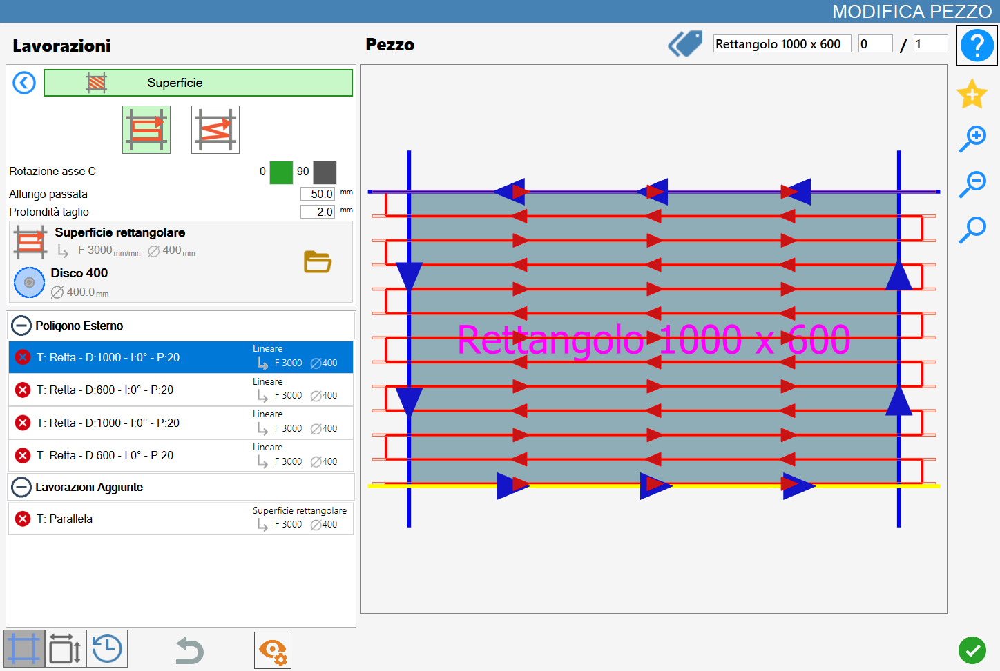
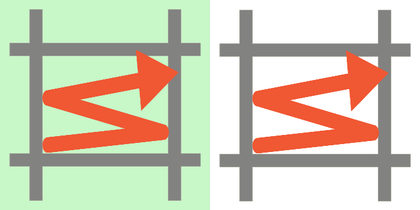
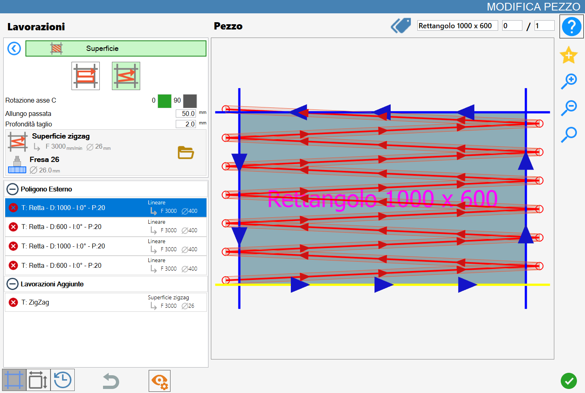
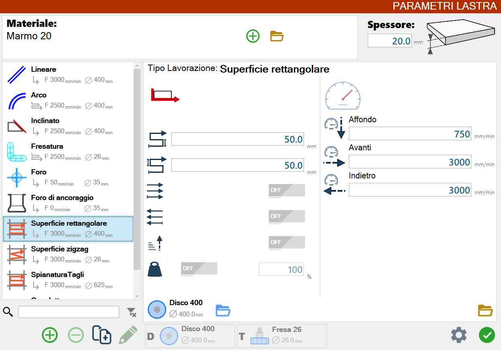
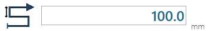
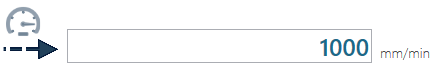
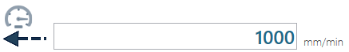
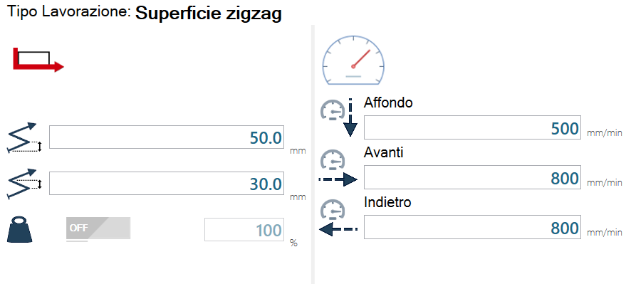
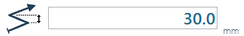

Questa funzionalità permette all’operatore di effettuare lavorazioni sulla superficie del materiale.

Tipologie di lavorazione
Per utilizzare questa lavorazione, occorre innanzitutto scegliere una delle due modalità disponibili, selezionando il pulsante corrispondente:
Le modalità 'Superficie rettangolare' e 'Superficie zigzag' sono mutuamente esclusive: l'attivazione di una esclude automaticamente l'altra.
/2.3-20250702-115519.png) | Superficie rettangolare |
 | Superficie zigzag |
Parametri
Rotazione asse C | Determina l’orientamento della lavorazione che può essere orizzontale (0_) oppure verticale (90_) rispetto al piano di lavoro. |
Allungo passata | Ogni taglio generato da questa lavorazione è prolungato, sia in testa che in coda, della lunghezza indicata da questo parametro. |
Profondità taglio | Indica la profondità della lavorazione nel materiale. |
Esecuzione della lavorazione
È possibile applicare la lavorazione premendo il pulsante a sinistra del taglio opportuno nella lista dei poligoni.
Un’icona rossa con una 'X' indica che la lavorazione non può essere applicata al taglio desiderato.
Esecuzione Superficie Rettangolare
Dopo aver impostato i parametri della lavorazione, selezionare un lato del pezzo su cui si desidera eseguire la lavorazione.
I tagli verranno effettuati dal basso verso l’alto.
Esecuzione Superficie ZigZag
Dopo aver impostato i parametri della lavorazione, selezionare un lato del pezzo su cui si desidera eseguire la lavorazione.
I tagli verranno effettuati dal basso verso l’alto.

Parametri di lavorazione della lastra
L’operatore può modificare i parametri legati alle lavorazioni superficiali dal pannello dei parametri di lavorazione della lastra.

Superficie rettangolare
Questa schermata mostra i parametri di lavorazione per la modalità “Superficie rettangolare“.
/9.2.1-20250702-133450.png)
Descrizione parametri
/4.1_c-20250703-065057.png) | Distanza tra passate all’andata |
 | Distanza tra passate al ritorno |
Solo passate in avanti | |
/4.4_c-20250703-065325.png) | Solo passate indietro |
/4.5_c-20250703-065355.png) | Solleva disco a fine passata |
Pressione pistone |
L’abilitazione dei parametri per le passate in un verso specifico sono mutualmente esclusivi.
Se uno dei due è attivato, il programma impone anche l’attivazione del sollevamento del disco a fine passata.
Descrizione parametri velocità
/5.1_b-20250313-160704.png) | Affondo |
 | Avanti |
 | Indietro |
Superficie zigzag
Questa schermata mostra i parametri di lavorazione per la modalità “Superficie zigzag“.

Descrizione parametri
/6.1_c-20250703-070354.png) | Distanza tra passate all’andata |
 | Distanza tra passate al ritorno |